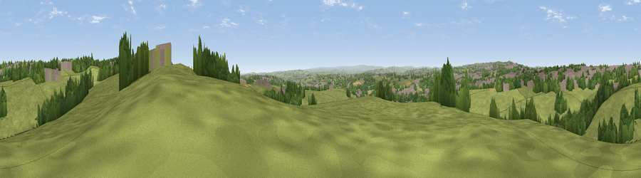

Viewpoint near Birkenshaw
#22834 in England · top 36% of its area beats it · near BirkenshawThe view, rendered

A 360° render of this exact spot computed from the terrain model, tree cover and land cover — summer colours, afternoon light, calibrated against photographs of famous viewpoints. Real trees, hedges and buildings will differ in detail.
The panorama
Grey silhouette: terrain skyline in each direction (720 bearings, Earth curvature and refraction included). Dashed green: skyline with trees (+15 m) and buildings (+8 m) as obstacles. Blue strip: how far the ground is visible on each bearing.
Where the view opens
Wedge length = distance to the farthest visible ground on that bearing (vegetation-aware). Rings at 10, 25 and 50 km.
What fills the view
65% grassland · 17% woodland · 17% built-up · 1% cropland
Angular shares of the visible panorama (visual magnitude), not map area. Landscape diversity 0.41 (0–1 Shannon).
Key numbers
More beautiful places nearby
The staircase of upgrades: each row has a higher view potential than everything closer. Driving times are estimates from straight-line distance, calibrated against real road routing — check an actual route before setting out.
| Place | Direction | Drive | Score |
|---|---|---|---|
| Westgate Hill | ENE · 2 km | ~4 min | 52.1 |
| Viewpoint near Birstall | SE · 5 km | ~11 min | 54.2 |
| Viewpoint near Shelf | WNW · 6 km | ~12 min | 59.5 |
| Viewpoint near Queensbury | WNW · 7 km | ~15 min | 66.8 |
| Viewpoint near Stump Cross | WSW · 9 km | ~18 min | 67.8 |
| Viewpoint near Stump Cross | W · 10 km | ~19 min | 71.5 |
| Rawdon Billing | NNE · 11 km | ~21 min | 73.0 |
| Viewpoint near Otley | N · 15 km | ~27 min | 77.5 |
53.75680, -1.71824 · source: screening · position refined by local search. Computed location — check access rights before visiting.